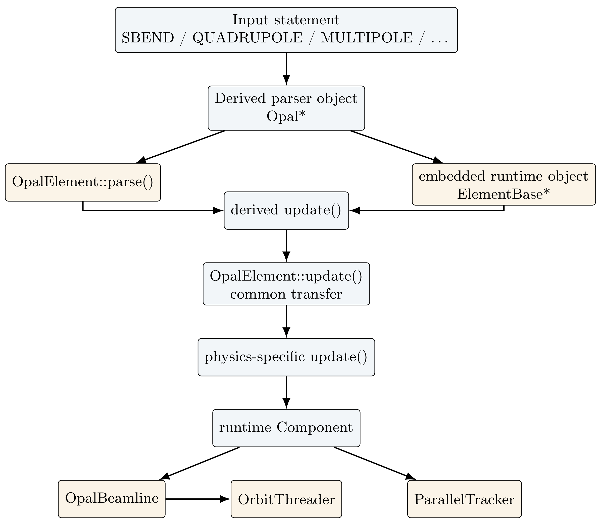
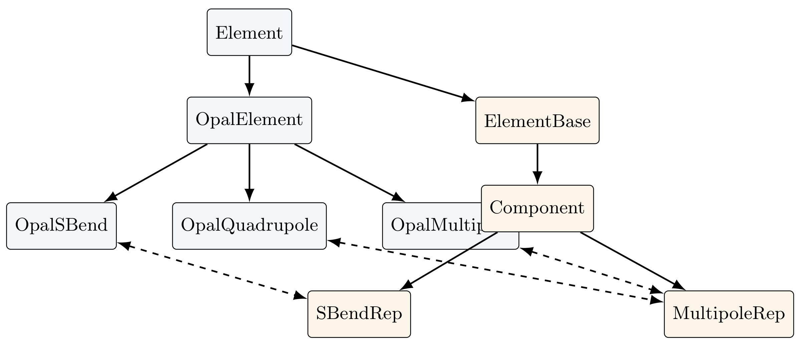
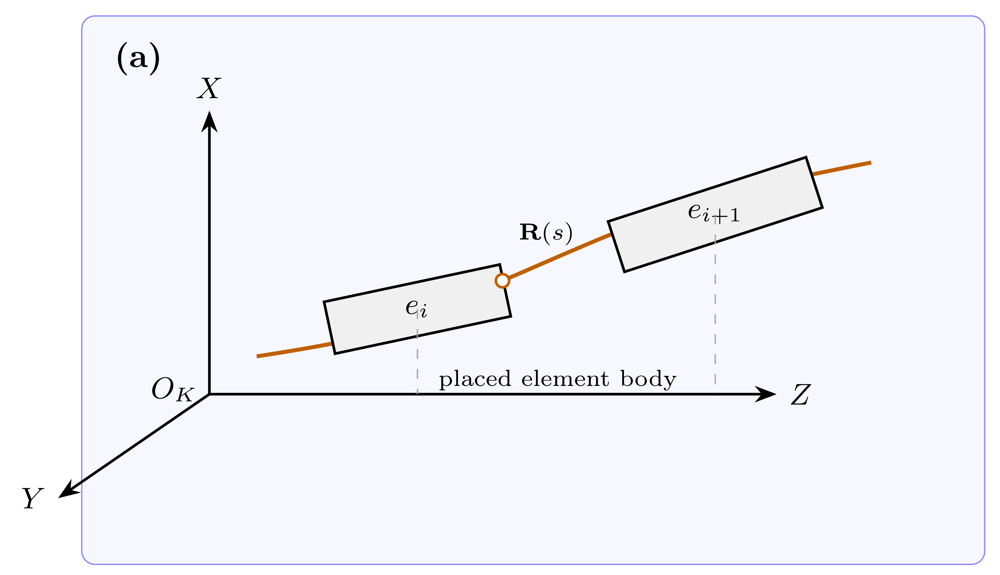
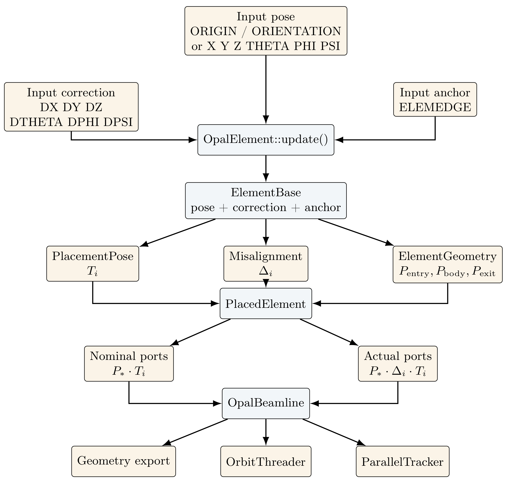
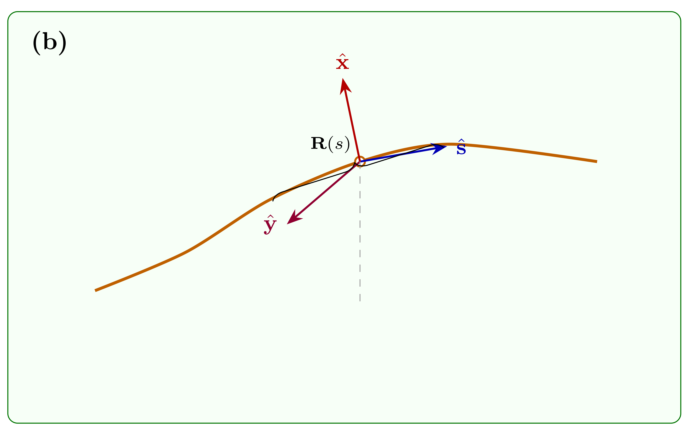
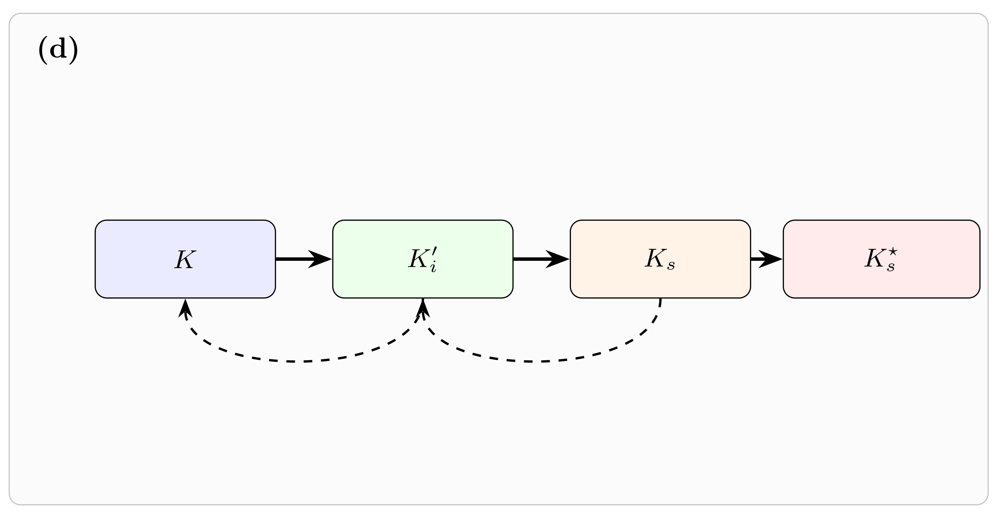
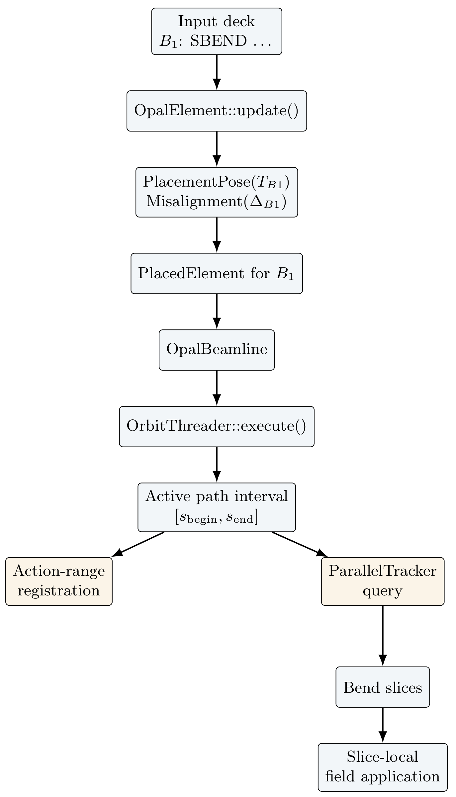
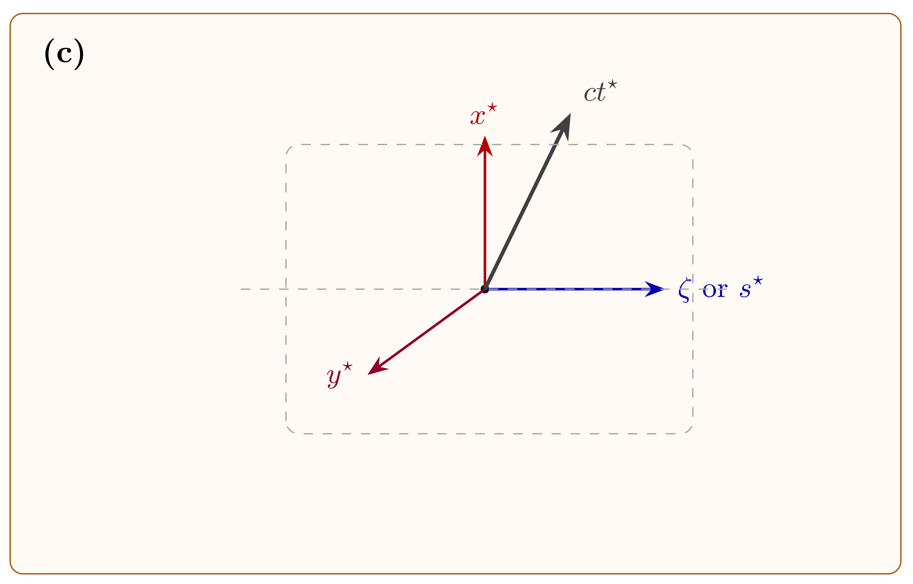

flowchart TD A["Parser layer<br/>OpalElement -> OpalBend<br/>OpalSBend / OpalRBend"] --> B["Runtime bend reps<br/>SBendRep / RBendRep"] B --> C["Curved geometry + field<br/>PlanarArcGeometry / RBendGeometry<br/>BMultipoleField"] B --> D["Placed beamline<br/>OpalBeamline / PlacedElement"] D --> E["Rigid transforms<br/>CoordinateSystemTrafo"] D --> F["Reference-path layer<br/>OrbitThreader / IndexMap<br/>ReferencePathModel"] D --> G["Tracking layer<br/>ParallelTracker"] F --> G
10 Sandbox
This chapter is reserved for exploratory notes, draft diagrams, implementation sketches, and benchmark-driven documentation that is not yet ready to be folded into the formal theory chapters.
The intended use is:
- keep work-in-progress material visible in the rendered manual,
- document code-facing conventions before promoting them into the final text,
- collect diagrams and benchmark notes that support later physics sections.
10.1 OPAL - OPALX Redesign notes
10.2 OPALX has 4 Layers of Structure (need better title)
Figure 1 extends the element-only (bend) class structure from the Elements chapter into the placement and tracking path used by the present SBEND and RBEND implementation in OPALX.
The diagram emphasizes four layers:
- parser-facing
Opal*element definitions, - runtime bend and field representations,
- beamline placement and coordinate-system assembly,
- reference-path and tracking-side infrastructure.
The parser-side bend objects define attributes, defaults, and input-language validation. The actual runtime geometry and field ownership lives in the representation classes SBendRep and RBendRep.
The next structural step is the placement layer. OpalBeamline assembles the declared components into a placed beamline and keeps a PlacedElement description for each runtime element, including the nominal and actual body, entry, exit, and support transforms.
For tracking, OrbitThreader threads a reference path through the placed beamline and builds the indexing and registration information needed by the tracker. ParallelTracker then consumes the placed beamline and the threaded reference-path information when updating external fields and advancing the reference particle.
10.2.1 QUADRUPOLE and MULTIPOLE
The same parser-to-runtime analysis can be carried out for the present quadrupole and generic multipole path. The main structural difference relative to bends is that OpalQuadrupole and OpalMultipole inherit directly from OpalElement. There is no intermediate parser-side family class analogous to OpalBend.
That detail matters because all common element-level attributes are inherited immediately from OpalElement, including:
- design type and aperture,
- placement and floor coordinates,
- orientation angles,
- local misalignments,
- output and common element options.
At update time, both parser-side front ends call the common OpalElement machinery and then configure the same runtime representation MultipoleRep. QUADRUPOLE is therefore a restricted front end on top of the generic MULTIPOLE runtime path.
flowchart TD A["Parser layer<br/>OpalElement<br/>OpalQuadrupole / OpalMultipole"] --> B["Runtime multipole rep<br/>MultipoleRep"] B --> C["Straight geometry + field<br/>StraightGeometry<br/>BMultipoleField"] B --> D["Placed beamline<br/>OpalBeamline / PlacedElement"] D --> E["Rigid transforms<br/>CoordinateSystemTrafo"] D --> F["Reference-path layer<br/>OrbitThreader / IndexMap<br/>ReferencePathModel"] D --> G["Tracking layer<br/>ParallelTracker"] F --> G
QUADRUPOLE and MULTIPOLE placement and tracking path in OPALX.
The runtime path is straight-element based. MultipoleRep owns a StraightGeometry object and a BMultipoleField, and both MULTIPOLE and QUADRUPOLE enter the beamline placement pipeline as ordinary Component instances. Consequently, once the parser-side update has completed, the placement and tracking infrastructure is the same one used elsewhere in the beamline:
OpalBeamlinestores the placed component and its transforms,PlacedElementrecords the nominal and actual coordinate systems,OrbitThreaderevaluates the host reference-path field model through the placed beamline,ParallelTrackeruses the same placed component during bunch tracking.
In other words, the present quadrupole family differs from the bend family mainly on the parser side and in the runtime geometry type:
- bends use
OpalBendand specialized curved runtime representations, QUADRUPOLEandMULTIPOLEuseOpalElementdirectly and share one straight multipole runtime representation.
The separate MULTIPOLET implementation is not included in this draft diagram. It is a different combined-function magnet path and should be documented separately once the straight MULTIPOLE and QUADRUPOLE structure is fully settled.
10.3 OpalElement as Parser-to-Runtime Bridge
OpalElement is primarily a parser-side front-end class. It is not the object that is later threaded through OpalBeamline or stepped by ParallelTracker. Instead, it is the bridge between the OPAL input language and the runtime ElementBase hierarchy.
The essential structural point is:
OpalElementinherits fromElement,Elementowns an embedded runtimeElementBase,- derived parser-side classes such as
OpalSBend,OpalRBend,OpalQuadrupole, andOpalMultipoleconfigure that embedded runtime object.
This means that OpalElement has two responsibilities:
- store and parse common OPAL element attributes,
- transfer common placement, orientation, aperture, and misalignment data into the embedded runtime element before the derived class adds physics-specific configuration.
The common parser-side attributes handled in OpalElement include:
L,- aperture,
ORIGINandORIENTATION,X,Y,Z,THETA,PHI,PSI,DX,DY,DZ,DTHETA,DPHI,DPSI,ELEMEDGE,- the transverse-exit deletion flag.
The following diagram shows the role of OpalElement in the current control flow.

OpalElement as the bridge from parsed OPAL element definitions to runtime ElementBase objects.The corresponding class-level ownership relation is:

OpalElement to the runtime ElementBase hierarchy.So the answer to the practical question “where is OpalElement used?” is:
- yes, first of all on the parser/input side,
- but more precisely as the shared front-end bridge from parsed element attributes into the runtime
ElementBaseobject, - after that handoff, placement, reference-path construction, and tracking are performed on the runtime object, not on
OpalElementitself.
This distinction is especially important for the bend work, since parser-side inheritance and runtime-side inheritance are intentionally different:
- parser side:
OpalElement -> OpalBend -> OpalSBend / OpalRBend, - runtime side:
ElementBase -> Component -> BendBase -> SBend / RBend -> Rep.
10.4 Element Placing (Posing)
This subsection is the working area for documenting how OPALX places, or poses, elements in space in a way that is consistent with Section 2: Coordinate Systems of the manual.
The immediate goal is not yet a final polished derivation. Instead, this sandbox section should fix the vocabulary, code anchors, and transformation chain used by the current implementation.
The placement topic will need to connect four layers:
- the parser-side placement attributes in
OpalElement, - the runtime pose stored in
ElementBase, - the placed beamline view represented by
PlacedElement, - the way
OpalBeamline,OrbitThreader, andParallelTrackerconsume those transforms.
10.4.1 Input placement, the current SE(3) bridge, and mismatch handling
The current OPALX implementation does not have a dedicated ((3)) class. The role of the rigid-motion carrier is instead played by CoordinateSystemTrafo. The important convention is that the stored transform maps parent-frame coordinates into local-frame coordinates. For a point \(\mathbf{r}_{\mathrm{parent}}\),
\[ \mathbf{r}_{\mathrm{local}} = Q\bigl(\mathbf{r}_{\mathrm{parent}} - \mathbf{o}\bigr). \]
This is a sound rigid transform, but it is the parent-to-local form rather than the local-to-parent pose matrix often used in robotics texts. Composition is still an ((3)) composition, with the OPALX convention
\[ (A \cdot B)(\mathbf{r}) = A(B(\mathbf{r})), \]
so the right-hand transform acts first.
The notation used in this subsection is:
- bold symbols such as (), (), and ((s)) denote vectors or embedded points in (^3),
- plain symbols such as (s), (t), and (t) denote scalars,
- frame and space symbols such as (K), (K_s), ((3)), and ((3)) are written non-bold,
- rigid transforms such as (G_i^{}), (i), and (B{i,}) are treated as maps in ((3)), acting on vectors by function application,
- (Q (3)) denotes the rotational part of a rigid transform,
- C++ identifiers such as
CoordinateSystemTrafoorPlacedElementare kept in monospace.
To remain consistent with Chapter 2, this sandbox note reserves:
- (P_i) for the placement map from the canonical local chart (U_i) into the laboratory frame (K),
- (p_{i,}) for the abstract port consisting of a marked boundary chart together with an adapted frame,
- (T_i(t)) for the Chapter 2 laboratory-frame pose of the canonical element frame.
The present code discussion therefore uses distinct implementation-side symbols:
- (G_i^{}) for the stored parent-to-nominal-body rigid transform,
- (G_i^{}) for the stored parent-to-actual-body rigid transform,
- (B_{i,}) for the body-relative rigid transform of the port frame materialized by
ElementGeometry.
The words nominal and actual need to be fixed before the bridge equations. In this note:
nominalmeans the rigid placement of the canonical element body frame in the parent frame before any local survey or misalignment correction is applied,actualmeans the rigid placement of that same body frame after the local correction has been applied,- these terms refer to body placement in physical space, not yet to the field-local charts used later by analytic bends.
For element (i), the current bridge therefore distinguishes:
- the nominal body pose (G_i^{} (3)), stored as
PlacementPose(parentToNominal), - the local correction (_i (3)), stored as
Misalignment(nominalToActual), - the actual body pose (G_i^{}), assembled from the first two quantities.

placed element body is kept inside the figure as the only descriptive in-figure annotation.The figure above should be read as the floor-frame interpretation of nominal placement. The global frame is the floor Cartesian frame (K=(X,Y,Z)). The orange reference line is the reference path in that frame, and ((s)) is a representative point on that path. The drawn element bodies (e_i) and (e_{i+1}) represent placed element bodies in floor space. At this stage of the discussion they should be read as nominal body poses. The corresponding actual body poses are obtained by applying the local correction (i) or ({i+1}) to those nominal poses; they are not drawn as separate boxes in this first figure.
The corresponding Chapter 2 to Sandbox crosswalk is:
| Chapter 2 object | Sandbox implementation-side representative | Current code anchor | Comment |
|---|---|---|---|
| (K) | floor Cartesian parent frame | beamline / lab frame | same object as in Chapter 2 |
| (P_i) | conceptual local-to-lab placement map | not stored directly | Chapter 2 geometric notion |
| (G_i^{}) | stored inverse rigid representative of the nominal body pose | PlacementPose, ElementBase::getCSTrafoGlobal2Local() |
implementation-side parent-to-local map |
| (_i) | nominal-to-actual local correction | Misalignment, ElementBase::getMisalignment() |
same correction idea as in Chapter 2 |
| (G_i^{} = _i G_i^{}) | stored inverse rigid representative of the actual body pose | assembled in PlacedElement |
implementation-side parent-to-local map |
| (p_{i,}) | abstract port in the Chapter 2 sense | not stored as a single object | marked boundary chart plus adapted frame |
| (B_{i,}), (B_{i,}), (B_{i,}) | body-relative rigid transforms of the port frames | ElementGeometry via getEntryPort(), getBodyPort(), getExitPort() |
implementation-level port-frame representatives |
| field-local chart | runtime field-evaluation chart, especially for analytic bends | OpalBeamline::transformToFieldLocalCS() and related methods |
additional runtime chart beyond Chapter 2 rigid placement |
This table makes the key distinction explicit: the bridge first constructs placement in floor space, and only afterwards do some runtime paths map positions and vectors into a separate field-local chart. Those two layers should not be conflated.
Under that convention, the current posing bridge can be stated compactly as:
\[ G_i^{\mathrm{act}} = \Delta_i \cdot G_i^{\mathrm{nom}}, \]
The canonical port-frame representatives (B_{i,}), (B_{i,} = I), and (B_{i,}) are body-relative marked frames. This means the same port can be queried either nominally or actually, depending on whether it is composed with (G_i^{}) or with (G_i^{}).
The corresponding nominal and actual port transforms are
\[ G_{i,\mathrm{entry}}^{\mathrm{nom}} = B_{i,\mathrm{entry}} \cdot G_i^{\mathrm{nom}}, \qquad G_{i,\mathrm{exit}}^{\mathrm{nom}} = B_{i,\mathrm{exit}} \cdot G_i^{\mathrm{nom}}, \]
and
\[ G_{i,\mathrm{entry}}^{\mathrm{act}} = B_{i,\mathrm{entry}} \cdot G_i^{\mathrm{act}}, \qquad G_{i,\mathrm{exit}}^{\mathrm{act}} = B_{i,\mathrm{exit}} \cdot G_i^{\mathrm{act}}. \]
This is exactly the bridge assembled in PlacedElement. ElementBase stores the ingredients PlacementPose and Misalignment, while PlacedElement materializes both the nominal and actual body/port transforms.
| Input-file quantity | Geometric meaning | Bridge object | Main C++ entry points |
|---|---|---|---|
ORIGIN, ORIENTATION |
explicit nominal body pose | PlacementPose |
OpalElement::update(), ElementBase::setCSTrafoGlobal2Local(), ElementBase::fixPosition() |
X, Y, Z, THETA, PHI, PSI |
explicit nominal body pose in split scalar form | PlacementPose |
OpalElement::update(), ElementBase::setCSTrafoGlobal2Local(), ElementBase::fixPosition() |
DX, DY, DZ, DTHETA, DPHI, DPSI |
local nominal-to-actual correction | Misalignment |
OpalElement::update(), ElementBase::setMisalignment() |
ELEMEDGE |
compatibility reference-path start coordinate | elementPosition_m |
ElementBase::setElementPosition(), OpalBeamline::resolveVisitStartField(), OpalBeamline::compileCompatibilityPlacement() |
| legacy edge geometry | body-relative entry/body/exit ports | ElementGeometry |
ElementBase::getEntryPort(), getBodyPort(), getExitPort(), getPlacementGeometry() |
The parser-side and runtime-side split is therefore:
OpalElement::update()interprets the input attributes and pushes them into the embedded runtime element.ElementBasestores the nominal rigid transform, the local correction, and the optionalELEMEDGEreference coordinate.ElementBase::getPlacedElement()assembles these quantities into the bridge viewPlacedElement.OpalBeamlineconsumes that placed-element view, either by respecting an already fixed pose or by compiling compatibility placement from reference order andELEMEDGE.

Current mismatch detection is partial and distributed, not centralized:
- malformed
ORIGINorORIENTATIONarrays are rejected inOpalElement::update()with anOpalException, - analytic
SBENDandRBENDelements without explicitZplacement still requireELEMEDGE; this is enforced inOpalBeamline::resolveVisitStartField(), - explicit nominal placement is protected by
fixPosition(), so the later compatibility placement pass does not overwrite an already posed element, - port continuity and field-local consistency are currently validated mainly by regression tests such as
TestOpalBeamlinePlacement, together with exported placement summaries, rather than by a dedicated runtime validator.
This also clarifies where a future mismatch detector should sit. The natural place is not the parser, but the bridge boundary where PlacedElement combines the nominal pose, local correction, and body-relative ports into a single explicit geometric record.
10.4.2 Current placement path in the code
At the moment, the placement handoff in OPALX is centered around OpalElement::update(). That function interprets the parser-side placement attributes and writes them into the embedded runtime ElementBase object.
In particular, the current path includes:
- global pose through
setCSTrafoGlobal2Local(...), - the fixed-position flag through
fixPosition(), - local misalignment through
setMisalignment(...), - optional longitudinal placement through
setElementPosition(...).
Once this has been done, ElementBase::getPlacedElement() provides the bridge to the explicit placed-element representation that is later used by the beamline assembly.
flowchart TD A["Parser-side OpalElement"] --> B["Placement attributes"] B --> C["OpalElement::update()"] C --> D["Runtime ElementBase<br/>pose + correction + anchor"] D --> E["ElementBase::getPlacedElement()"] E --> F["PlacedElement"] F --> G["Nominal / actual ports"] F --> H["OpalBeamline"] H --> I["OrbitThreader"] H --> J["ParallelTracker"]
10.4.3 Scope of the placement note
The intended scope of this sandbox subsection is:
- restate the placement conventions from Section 2 in code-facing language,
- explain how
ORIGIN/ORIENTATIONrelate toX,Y,Z,THETA,PHI,PSI, - explain how local misalignments
DX,DY,DZ,DTHETA,DPHI,DPSIare applied, - explain the role of nominal versus actual placement,
- explain how entry, body, and exit transforms are represented for curved elements,
- prepare the later
OrbitThreaderdocumentation.
10.4.4 Straight elements, curved elements, and runtime charts
For accelerator physicists the practical question is not just how a rigid body is posed in floor space, but how that rigid placement is connected to the reference trajectory and to the coordinates used later for field evaluation and tracking.
The comoving reference-orbit frame is the next layer:

The comoving Frenet-Serret frame (K_s=(x,y,s)) is attached to the reference orbit rather than to the placed hardware. In the Chapter 2 language, this is the practical split between the world chart ((r,t)) used for placement in laboratory space and the reference chart (s) used to report where the reference orbit currently sits. For a straight element this distinction is almost invisible: the body (z)-direction and the reference longitudinal coordinate (s) coincide, so the body placement and the field chart are effectively the same to first order. For a curved element, however, that is no longer true. The rigid body is still placed in floor space by a single stored pose (G_i^{}), but the field chart follows the design orbit through the magnet.
This is the key machinery of the current OPALX bridge:

CoordinateSystemTrafo), reference-path transform, and Lorentz boost. The dashed arrows indicate inverse or field-query transforms used later in the runtime path.In accelerator language, the chain is:
- place the element body in the floor frame (K),
- define entry/body/exit ports relative to that body,
- assemble nominal and actual placed-element transforms,
- pass to a reference-orbit-based chart when field evaluation requires it.
This leads to the following conventions.
| Topic | Straight elements | Curved elements (SBEND, RBEND, RBEND3D) |
Main code anchors |
|---|---|---|---|
| Nominal body pose | one rigid stored pose (G_i^{}) in floor space | one rigid stored pose (G_i^{}) in floor space | PlacementPose, setCSTrafoGlobal2Local(), getPlacedElement() |
| Actual body pose | (G_i^{} = _i G_i^{}) | (G_i^{} = _i G_i^{}) | Misalignment, PlacedElement::getActualBodyTransform() |
| Entry/body/exit ports | rigid port-frame transforms (B_{i,}) aligned with the straight body chart | rigid port-frame transforms (B_{i,}) attached to the curved element body; they define geometric entry and exit faces | getEntryPort(), getBodyPort(), getExitPort(), ElementGeometry |
| Longitudinal chart used for geometry export | body (z) coordinate | nominal body ports plus bend design path / edge geometry | getNominalEntryTransform(), getNominalExitTransform(), save3DLattice() |
| Longitudinal chart used for field evaluation | body-local chart is usually sufficient | separate field-local chart tied to the reference orbit | transformToFieldLocalCS(), transformFromFieldLocalCS(), BendBase field-local mapping |
| Compatibility placement without explicit pose | ELEMEDGE can supply the start coordinate, but explicit Z pose also works |
analytic bends remain strict: without explicit Z, ELEMEDGE is required |
resolveVisitStartField(), compileCompatibilityPlacement() |
The parser-side orientation and misalignment angles should also be stated in the same code-facing way they are actually built:
- the orientation quaternion is assembled in
OpalElement::update()asrotTheta * (rotPhi * rotPsi), - the corresponding axes are
theta -> y,phi -> x, andpsi -> z, - the same axis order is used for the local misalignment rotation
rotationY * rotationX * rotationZ, - the transform stored in
CoordinateSystemTrafois the conjugated, parent-to-local form.
For the current implementation it is therefore safest to document the parser angles by their construction order in code, not by introducing additional intrinsic/extrinsic terminology that might obscure the existing convention.
From the accelerator-physics point of view, three additional remarks matter.
First, there is a distinction between survey placement and reference orbit. The survey or input placement fixes where the hardware sits in the floor frame. The reference orbit is the path that the traced reference particle actually follows through the placed lattice. In a perfectly matched straight section those two viewpoints nearly coincide. In curved or misaligned sections they do not: the survey pose still describes the body in floor space, while the reference orbit defines the comoving longitudinal coordinate used later for tracking and field queries.
Second, the entry and exit faces are geometric ports, not yet the same thing as a hard-edge transport model. The ports determine where the canonical body chart begins and ends, and they are used for geometric chaining, export, and diagnostics. A hard-edge or fringe-field model then decides how the field support extends relative to those geometric faces. This distinction is especially important for bends, where body extent and field-support extent need not coincide.
Third, ELEMEDGE should be understood physically as a reference-path anchoring coordinate. It is not an independent survey pose. In the compatibility placement path it specifies where the element edge sits on the longitudinal reference coordinate used for beamline assembly. For ordinary straight elements this is mostly a convenience. For analytic bends without an explicit rigid Z placement it remains essential, because the code still needs an unambiguous longitudinal anchor from which the bend body and field support are laid out.
The main placement split for later runtime documentation is then:
OpalElementparses and constructs the rigid nominal pose and local correction,ElementBasestores those ingredients and the optional compatibility longitudinal coordinate,PlacedElementassembles the explicit nominal/actual body and port transforms,OpalBeamlinecompiles these into the beamline placement assembly,OrbitThreaderandParallelTrackerconsume that assembly, with bends introducing a separate field-local chart on top of the rigid body placement.
This subsection is now the right place to continue with a dedicated OrbitThreader note, because the distinction between floor placement, body ports, and reference-orbit charts has been made explicit.
10.5 OrbitThreader
OrbitThreader is the first stage where the placed geometry is converted into a traced reference orbit. For accelerator physicists, its role is simple to state:
- start from the reference particle state,
- move that particle through the placed lattice in the summed external fields,
- record which elements are active along the traced longitudinal coordinate,
- hand that occupancy and interval information to the main tracker.
In other words, OrbitThreader is the bridge between static placement and the dynamic reference-path picture used by time-based tracking.
The symbols (T_i), (i), and (P{i,*}) retain the meanings fixed in Table Table 10.1; C++ class and function names stay in monospace.
10.5.1 Physical role of the traced reference path
The placed lattice tells us where hardware sits in floor space. The traced reference path tells us which parts of that hardware are actually intersected by the reference particle and in what longitudinal order. Those are not the same question in a general 3D placed lattice.
This is why OrbitThreader exists at all. It does not merely sort elements by a nominal Z coordinate. It integrates the reference particle through the placed fields and constructs a path-based activation model from that integration.
flowchart TD A["Placed beamline<br/>OpalBeamline"] --> B["Reference state<br/>r, p, s, t, dt"] B --> C["OrbitThreader::execute()"] C --> D["Traced path<br/>DesignPath.dat"] C --> E["ReferencePathModel<br/>active occupancy"] C --> F["Action-range model<br/>registered intervals"] E --> G["ParallelTracker::computeExternalFields()"] F --> G G --> H["Bunch tracking"]
10.5.2 Code-side path construction
The current implementation is centered around:
- constructor:
OrbitThreader(ref, r, p, s, maxDiffZBunch, t, dT, stepSizes, beamline) - main driver:
OrbitThreader::execute() - local integrator:
OrbitThreader::integrate(...)
The input state comes directly from the bunch reference particle in ParallelTracker:
- reference particle rest data,
- lab-frame reference position and momentum,
- current path-length coordinate
s, - bunch time
t, - current time step
dt.
So OrbitThreader does not invent a separate reference particle. It reuses the same physical reference state that the main time-based tracker is about to use.
10.5.3 What OrbitThreader produces
The class owns two distinct path models.
ReferencePathModelfromimap_m
- this is the traced active-element occupancy model,
- it answers: which elements are active around the current traced longitudinal position?
actionRangeRegistrationModel_m
- this is the registration model for backward-compatible action ranges,
- it answers: which element intervals should be registered on the elements themselves for later legacy-style use?
This split matters physically. The first model is a traced occupancy model. The second is a registration model that translates the traced result into legacy element intervals and ELEMEDGE-compatible ranges.
10.5.4 Why bends need special treatment
The field evaluation stage later distinguishes straight elements from analytic bends. ParallelTracker::computeExternalFields() uses the OrbitThreader occupancy query, but then treats bends specially:
- straight and most other elements use one rigid local field transform,
- bends build tracking slices and use an entry-to-slice-local reference-path transform inside each slice.
So the information flow is:
OrbitThreadersays which bend is active along the traced path,ParallelTrackerasks the bend for tracking slices,- the bunch is mapped slice-by-slice into the bend’s local reference-path chart,
- the bend applies the slice field,
- the bunch is mapped back to the reference frame.
This is the point where the distinction made in 10.3.4 becomes operational: - rigid floor placement tells us where the bend is, - the field-local slice chart tells us how the bunch is advanced through it. - reference-path slices and bend-local tracking charts in more detail.
10.5.5 Disconnected placement and mismatch detection
OrbitThreader also contains the first real runtime consistency check for placed lattices. After the traced path has been built, validateVisitedElements(...) scans placed elements that should have been reachable and checks whether the reference path ever visited them.
If a nontrivial placed element lies within the traced longitudinal window but is never intersected, the code raises a user-facing exception and reports its nominal entry, body, and exit coordinates.
This is the current runtime answer to the practical question:
- “Did I place the hardware in a way that the reference trajectory can actually thread through it?”
For an accelerator physicist, this is often the most useful placement diagnostic, because it converts a disconnected survey configuration into a clear statement about the traced reference orbit.
10.5.6 Relation to ELEMEDGE
OrbitThreader::registerElement(...) and processElementRegister() are where the traced path is turned back into legacy-compatible element ranges.
For general elements, the code infers an effective element-edge coordinate from the traced local entrance state. For bends, processElementRegister() applies the bend field extent explicitly:
- it gets
fieldBeginandfieldEnd, - if the bend already has an explicit
ELEMEDGE, that value is kept as the anchor, - the registered action range is then built from that anchored field interval.
Physically, this means: - the traced path determines what the reference particle actually visited, - ELEMEDGE still acts as the longitudinal anchor used to express the bend field interval in the legacy coordinate language.
ELEMEDGE should be seen as depricayed, in a linear setup instead Z should be used.
10.5.7 Handoff to the main tracker
The handoff is in ParallelTracker:
- construct
OrbitThreader, - call
execute(), - retrieve the global bounding box,
- use
oth.query(...)for active elements around each bunch container, - also inspect
oth.getActionRangeRegistrationModel()to ensure bend segments remain visible in the queried window.
So OrbitThreader is not only a diagnostic tool or a design-path logger. It is part of the live tracking machinery that decides which elements are considered active for field application.
10.5.8 Worked example: one placed bend
It is useful to make the machinery concrete on the simplest nontrivial case: a single placed analytic bend, for example one SBEND instance B1.
The physical story is:
- the input deck fixes the bend body pose in floor space, either explicitly by
ORIGIN/ORIENTATIONorX,Y,Z,THETA,PHI,PSI, or compatibly through a longitudinal anchor such asELEMEDGE, OpalElement::update()turns that into a stored nominal body pose (G_{B1}^{}) and an optional local correction,OpalBeamlineassembles the correspondingPlacedElement,OrbitThreadertraces the reference particle and determines the interval along the traced path whereB1is actually active,ParallelTrackerqueries that interval and, becauseB1is a bend, applies the bend field slice by slice in a reference-path-local chart.

For this one-bend case, the key objects and physical meanings are:
| Stage | Object or quantity | Physical meaning | Main code anchors |
|---|---|---|---|
| 1 | (G_{B1}^{}) | nominal bend body pose in floor space | PlacementPose, setCSTrafoGlobal2Local() |
| 2 | (_{B1}) | local survey / misalignment correction | Misalignment, setMisalignment() |
| 3 | (B_{B1,}), (B_{B1,}) | body-relative port-frame transforms for the geometric bend entry and exit faces | getEntryPort(), getExitPort(), ElementGeometry |
| 4 | traced active interval | part of the reference path where the bend is actually intersected | OrbitThreader::execute(), imap_m.add(...) |
| 5 | registered action range | legacy-compatible bend field interval | registerElement(), processElementRegister() |
| 6 | bend slices | local reference-path pieces used for field application | buildTrackingSlices(), applySlice() |
The important physics point is that the rigid bend pose alone does not yet tell the tracker how to advance the bunch through the bend. It tells the code where the hardware sits. OrbitThreader then determines where the reference orbit actually threads that hardware, and the bend tracker finally resolves that path into slice-local field applications.
This is also where ELEMEDGE enters most clearly. For the worked bend:
- if an explicit bend edge coordinate is already set, that coordinate remains the bend anchor,
- the traced reference path then determines the visited field interval around that anchor,
- the action-range registration model carries that interval forward so that the main tracker continues to see the bend in the correct longitudinal window.
So the one-bend example already contains the full machinery in miniature:
- survey placement,
- nominal/actual body pose,
- geometric ports,
- traced occupancy interval,
- legacy-compatible registration interval,
- slice-based bend tracking.
10.6 Autophasing
Autophasing fixes the RF phase, or lag, used by an accelerating element for a given reference particle. In the old OPAL formulation the RF elements are external field maps. The spatial field is sampled on a one-, two-, or three-dimensional grid, interpolated at the particle position, and multiplied by the time-dependent RF factor
\[ \cos(\omega t + \varphi), \]
where () is the angular RF frequency and () is the lag. The autophasing problem is therefore: choose () so that the reference particle obtains the desired, usually maximal, energy gain through the element.
This sandbox note uses the old OPAL derivation as the starting point, but keeps the wording OPALX-facing. The code-facing question for OPALX is how this phase condition is tied to the traced reference path, the element-local field map, and the time model used during reference-particle threading.
10.6.1 Standing-Wave Cavity
For a standing-wave cavity with longitudinal field (E_z(z,r)), the energy gain of a particle with charge (q) is written
\[ \Delta E(\varphi,r) = q V_0 \int_{z_{\mathrm{begin}}}^{z_{\mathrm{end}}} \cos\!\left(\omega t(z,\varphi) + \varphi\right) E_z(z,r)\, dz . \]
The auto-phase for maximum energy gain satisfies
\[ \frac{d\Delta E}{d\varphi}=0. \]
Keeping the possible phase-dependence of the arrival-time model gives
\[ \begin{aligned} 0 &= \int_{z_{\mathrm{begin}}}^{z_{\mathrm{end}}} \left(1+\omega \frac{\partial t}{\partial \varphi}\right) \sin\!\left(\omega t(z,\varphi)+\varphi\right)E_z(z,r)\,dz \\ &= \cos\varphi\,\Gamma_1 + \sin\varphi\,\Gamma_2 . \end{aligned} \]
Thus the lag is determined by
\[ \tan\varphi = -\frac{\Gamma_1}{\Gamma_2}. \]
For a sampled field map, OPAL assumes a linear field interpolation and a linear time interpolation between neighboring samples (z_{i-1}) and (z_i). With (z_i=z_i-z_{i-1}), (t_i=t_i-t_{i-1}), and (E_{z,i}=E_{z,i}-E_{z,i-1}),
\[ \Gamma_1 = \sum_{i=1}^{N-1} \left(1+\omega \frac{\partial t}{\partial\varphi}\right) \int_{z_{i-1}}^{z_i} \sin\!\left( \omega\left(t_{i-1}+\Delta t_i \frac{z-z_{i-1}}{\Delta z_i}\right) \right) \left( E_{z,i-1}+\Delta E_{z,i}\frac{z-z_{i-1}}{\Delta z_i} \right) dz \]
and
\[ \Gamma_2 = \sum_{i=1}^{N-1} \left(1+\omega \frac{\partial t}{\partial\varphi}\right) \int_{z_{i-1}}^{z_i} \cos\!\left( \omega\left(t_{i-1}+\Delta t_i \frac{z-z_{i-1}}{\Delta z_i}\right) \right) \left( E_{z,i-1}+\Delta E_{z,i}\frac{z-z_{i-1}}{\Delta z_i} \right) dz . \]
The products in these interval integrals can be evaluated analytically. In normalized interval coordinates (), define
\[ \begin{aligned} \Gamma_{11,i} &= \int_0^1 \sin\!\left(\omega(t_{i-1}+\tau\Delta t_i)\right)\,d\tau = -\frac{\cos(\omega t_i)-\cos(\omega t_{i-1})}{\omega\Delta t_i},\\ \Gamma_{12,i} &= \int_0^1 \tau\sin\!\left(\omega(t_{i-1}+\tau\Delta t_i)\right)\,d\tau = \frac{-\omega\Delta t_i\cos(\omega t_i) +\sin(\omega t_i)-\sin(\omega t_{i-1})} {\omega^2\Delta t_i^2},\\ \Gamma_{21,i} &= \int_0^1 \cos\!\left(\omega(t_{i-1}+\tau\Delta t_i)\right)\,d\tau = \frac{\sin(\omega t_i)-\sin(\omega t_{i-1})}{\omega\Delta t_i},\\ \Gamma_{22,i} &= \int_0^1 \tau\cos\!\left(\omega(t_{i-1}+\tau\Delta t_i)\right)\,d\tau = \frac{\omega\Delta t_i\sin(\omega t_i) +\cos(\omega t_i)-\cos(\omega t_{i-1})} {\omega^2\Delta t_i^2}. \end{aligned} \]
Then the sampled sums become
\[ \Gamma_1 = \sum_{i=1}^{N-1} \left(1+\omega \frac{\partial t}{\partial\varphi}\right) \Delta z_i \left[ E_{z,i-1}(\Gamma_{11,i}-\Gamma_{12,i}) +E_{z,i}\Gamma_{12,i} \right], \]
and
\[ \Gamma_2 = \sum_{i=1}^{N-1} \left(1+\omega \frac{\partial t}{\partial\varphi}\right) \Delta z_i \left[ E_{z,i-1}(\Gamma_{21,i}-\Gamma_{22,i}) +E_{z,i}\Gamma_{22,i} \right]. \]
The remaining ingredient is the time model (t(z,)). The old OPAL algorithm initializes it from an approximate kinetic-energy ramp,
K[i] = K[i-1] + (z[i] - z[0]) * q * V;
b[i] = sqrt(1. - 1. / ((K[i] - K[i-1]) / (2.*m*c^2) + 1)^2);
t[i] = t[0] + (z[i] - z[0]) / (c * b[i]);which assumes that the kinetic energy increases linearly with position and is proportional to the maximum voltage. With that provisional time model one computes (), updates the kinetic-energy model using the corresponding field integral, recomputes the times, and repeats until the phase converges.
For OPALX this iteration should be interpreted as a reference-particle preprocessing step. It provides the RF lag consistent with the chosen reference trajectory and field-map convention before the main bunch tracking step uses the element.
10.6.2 Traveling-Wave Structure
For a traveling-wave structure, the same idea is applied to a field assembled from several phase-shifted pieces. The old manual describes the field as an entry fringe field, two core standing-wave contributions, and an exit fringe field. A representative energy-gain model is
\[ \begin{aligned} \Delta E(\varphi,r) &= q V_0 \int_{z_{\mathrm{begin}}}^{z_{\mathrm{beginCore}}} \cos(\omega t+\varphi) E_z(z,r)\,dz \\ &\quad + q V_{\mathrm{core}} \int_{z_{\mathrm{beginCore}}}^{z_{\mathrm{endCore}}} \cos(\omega t+\varphi_{\mathrm{c1}}+\varphi) E_z(z,r)\,dz \\ &\quad + q V_{\mathrm{core}} \int_{z_{\mathrm{beginCore}}}^{z_{\mathrm{endCore}}} \cos(\omega t+\varphi_{\mathrm{c2}}+\varphi) E_z(z+s,r)\,dz \\ &\quad + q V_0 \int_{z_{\mathrm{endCore}}}^{z_{\mathrm{end}}} \cos(\omega t+\varphi_{\mathrm{ef}}+\varphi) E_z(z,r)\,dz , \end{aligned} \]
where (s) is the cell length. Compared with the standing-wave case, the stationarity condition contains several (_1)- and (_2)-type sums with different phase offsets and integration ranges.
For the old FINLB02_RAC example,
FINLB02_RAC: TravelingWave, L=2.80, VOLT=14.750*30/31,
NUMCELLS=40, FMAPFN="FINLB02-RAC.T7",
ELEMEDGE=2.67066, MODE=1/3,
FREQ=1498.956, LAG=FINLB02_RAC_lag;the decomposition gives
\[ \begin{aligned} V_{\mathrm{core}} &= \frac{V_0}{\sin(2\pi/3)} = \frac{2V_0}{\sqrt{3}},\\ \varphi_{\mathrm{c1}} &= \frac{\pi}{6},\\ \varphi_{\mathrm{c2}} &= \frac{\pi}{2},\\ \varphi_{\mathrm{ef}} &= -2\pi(\mathrm{NUMCELLS}-1)\,\mathrm{MODE}. \end{aligned} \]
In the ultra-relativistic limit, where () changes only weakly along the structure, the arrival time can be approximated by
\[ t(z,\varphi) \simeq \frac{z}{\beta c}+t_0 . \]
The phase condition can then be simplified by exploiting the periodicity of the core field and the sinusoidal RF factor. In the old example the core field has period (3s) and (/(c)), which reduces the traveling-wave autophasing problem to a single periodic convolution-like condition over one three-cell interval. This approximation is useful as a diagnostic and a fast initial guess, but the general OPALX implementation should keep the full piecewise field-map and reference-time model available.
10.6.3 Consistency Notes for OPALX
- The phase () is an element-local RF lag, not a global beamline coordinate.
- The time samples (t_i) must be consistent with the reference path used by the element placement and tracking machinery.
- The sign convention in ((t+)) must be kept aligned with the input-language definition of
LAGand with any field-map convention. - Standing-wave and traveling-wave elements share the same mathematical structure: maximize the reference-particle energy gain with respect to the RF lag, then use the resulting lag during tracking.
10.7 Boosted Frenet-Serret frame
The next refinement step here should be:
- align the boosted-frame notation with the field-solver sections,
- decide how
K_s^\starshould be named in the final text, - connect the boosted-frame picture to the actual solver data flow.

10.8 Low Energy e-/e+ in a High Energy Coulomb Field
This sandbox note describes the present OPALX model for low-energy electron/positron witness particles born near an interaction point and moving through the field of a high-energy primary bunch. The current implementation is useful as a first numerical experiment, but it is not yet a complete laboratory-frame treatment of a relativistic Coulomb field.
10.8.1 Implemented model
The implemented path is driven by a BEAMBEAM element. Container 0 is the source bunch. The optional attribute
WITNESS_CONTAINERS = "1,2"selects passive witness containers. The default is
WITNESS_CONTAINERS = "NONE"so legacy beam-beam tracking is unchanged unless witness kicks are requested.
When the source bunch enters the BeamBeam window, OPALX replaces the normal self-field mesh by a fixed interaction-window mesh. The longitudinal extent is the placed BEAMBEAM element length, centered on the interaction point. If an aperture is provided, the transverse half widths define the fixed x-y field domain. The source charge density is deposited on this mesh and the open Poisson problem is solved in the BeamBeam/source frame,
\[ \nabla^2 \phi_s(\mathbf r_s) = -\frac{\rho_s(\mathbf r_s)}{\epsilon_0}, \qquad \mathbf E_s(\mathbf r_s) = -\nabla \phi_s(\mathbf r_s). \]
The witness particles do not contribute to this charge density. They only sample the already-solved source field. For a witness particle stored relative to its own container reference path, the current code maps the longitudinal coordinate into the source frame with
\[ z_s = z_w + (s_w - s_s), \]
where (s_s) is the source-container reference path length and (s_w) is the witness-container reference path length. The transverse coordinates are rotated with the same BeamBeam source-frame rotation used for the source bunch. The field is gathered on the fixed BeamBeam mesh and then rotated back to the reference frame before the normal Boris kick.
This gives a well-defined one-way coupling:
- source container deposits charge,
- source field is solved on the BeamBeam window mesh,
- witness containers gather that field,
- witness momenta are kicked,
- witness charge never feeds back into the source solve.
This is the approximation currently used for the gamma-gamma pair-tracking prototype. It is a source-field sampling model, not yet a full transformation of the high-energy bunch field into the physical frame seen by the low-energy pairs.
10.8.2 Missing physics
The primary missing piece is the relativistic field transformation. The source solve is presently electrostatic in the BeamBeam/source frame. A high-energy bunch seen in the laboratory frame has compressed transverse electric fields and a magnetic field. Starting from a source rest-frame Coulomb field (E’), (B’=0), the idealized boost along the source velocity (_s c) gives, schematically,
\[ \mathbf E_{\parallel} = \mathbf E'_{\parallel}, \qquad \mathbf E_{\perp} = \gamma_s \mathbf E'_{\perp}, \qquad \mathbf B = \frac{1}{c}\,\boldsymbol\beta_s \times \mathbf E , \]
with signs fixed by the exact frame convention. The witness kick should then use the Lorentz force in a common physical frame,
\[ \frac{d\mathbf p_w}{dt} = q_w \left(\mathbf E_{\mathrm{lab}} + \mathbf v_w \times \mathbf B_{\mathrm{lab}}\right). \]
For low-energy pairs this magnetic term and the difference between source, lab, and witness frames are not optional details: the witnesses can have large angles and broad velocities, so a scalar electrostatic kick in the source frame is only a first approximation.
The implementation also still treats the witness field sample as synchronous with the source field solve. A more complete model must define the time at which pairs are created, the source bunch phase at that time, and whether retardation or a quasi-static boosted-field approximation is sufficient for the target accuracy.
10.8.3 Work needed
The next implementation step is to make the frame contract explicit:
- define the source field frame, the OPALX reference frame, and the witness container frame in one notation;
- decide whether the source field should be stored as a rest-frame field plus boost metadata, or directly as a laboratory-frame ((E,B));
- apply the Lorentz-transformed field to witnesses in a common frame;
- preserve the current one-way coupling switch so
WITNESS_CONTAINERS="NONE"remains a true no-witness-space-charge mode.
The minimum validation set should include:
- a boosted point-charge or Gaussian-bunch manufactured solution for (E) and (B);
- a regression proving that witness containers receive a nonzero kick only when
WITNESS_CONTAINERSis enabled; - a check that witness particles outside the BeamBeam aperture are counted and reported;
- one-rank versus two-rank comparisons for the gamma-gamma pair input;
- conservation and reproducibility diagnostics for the source container when witnesses are enabled, verifying that witness charge is not deposited on the BeamBeam source mesh.
10.9 ToDo
- OrbitThreader: a short note on
trackBack()and why the path is traced slightly backward before the forward pass, - OrbitThreader: a diagram of the two internal models:
ReferencePathModelversus action-range registration,
10.1.1 Comments to the proposels of Jon/Chris
OpalElemen vs. Element / ElemenBase
Could OpalElement absorb Element? Technically possible only with a broader refactor, but not directly, because Line and Sequence also depend on Element. We would need to move Element’s responsibilities somewhere else.
Could OpalElement absorb ElementBase? That would couple parser objects to the tracking/beamline runtime model and force either parser classes to implement geometry/tracking/visitor APIs or runtime classes to become OPAL directory objects. That would make ownership, cloning, sharing, and beamline traversal substantially worse.
TBeamline is a template and has std::list as base class. Is it safe to use std::list as base?
Short answer: it is legal C++, but it is, indeed, not a good or safe design.
A better shape would be composition:
That preserves most call-site ergonomics while giving
TBeamlinecontrol over mutation.The whole Beamline, TBeamlinem TLine and FlaggedBeamline dierarchie is complext. Is it nessesary?
Mostly no: the concepts are necessary, but the current hierarchy is more complex than it needs to be.
What is actually needed:
ElementBase, so a beamline can appear anywhere an element can appear. That isBeamline.TBeamline<T>.ElementBase. That isElmPtr.LINE: reflected/selected flags. That isFlaggedElmPtr.SEQUENCE: position, relation to previous/next/begin/end, generated drift info, parser-sideElementpointer. That isSequenceMember.So the data model is defensible. But the implementation is too indirect:
The weak part is not that
LINEandSEQUENCEneed different metadata. They do. The weak part is encoding this through public inheritance fromstd::list<T>plus several inherited wrapper objects.A simpler design would be:
with one entry type:
or, cleaner, separate concrete types:
We could keep the conceptual split between runtime beamline, line entries, and sequence entries. But remove
TBeamline<T> : public std::list<T>over time.TLineandFlaggedBeamlineare not really independent abstractions; they are type aliases created becauseTBeamlineis templated. That is a sign the implementation is serving the template, not the model.Three more remarks w.r.t. Posing and Origin etc
See OPALX has 4 layers of structure in the next Sandbox chapter for the related structure and class-level context.
Why are bend element split into seperate loops in the compute3DLattice function?
This answer already is base on the branch
391-placement-of-sbend-and-rbend-analytic-fields-including-fringe-fields.They are split because bends need two different pieces of placement state:
The bend body/entry pose must be stored explicitly.
In the first loop in
OpalBeamline.cpp, the code scans only unpositioned bends. For eachSBEND/RBEND, it computes the desired entry pose, then converts that into the element body pose:That is bend-specific because a bend’s useful reference frame is not just “translate by length along z”. It has chord length, arc length, bend angle, entrance angle, rotation axis, and sometimes a true design path.
The second loop advances the global beamline chain for all elements.
The second loop then walks every element in beamline order. Straight elements get placed directly with
setNominalPlacement(...). Bends are already positioned by the first loop, so the second loop uses them mainly to advancecurrentCoordTrafoandendPriorPathLengthacross the curved/chord geometry.So the split is basically a compatibility bridge:
Is it necessary structurally? Probably not. It is necessary for the current implementation because bend placement is side-effectful and special-cased. A cleaner design would have one placement algorithm where every element exposes:
Then bends and straight elements would differ behind the element interface, not through separate loops in
OpalBeamline. The current split is a symptom that bend geometry is not yet fully hidden behind a uniform placement/port contract. And I guess is a hint that we need to think about this in a very general way … as we do now!The bend element
Nested LINE statements will call recursive calls.
Yes. A named nested
LINEwill cause recursive visitor calls.There is an important distinction in
Line::parseList():(A, B, C)are flattened immediately into the parent line.LINEobjects are inserted as anElementBase*pointing to their ownFlaggedBeamline, so they remain nested and are expanded later by recursive visitor traversal.This is another reason the
Beamline / TBeamline / FlaggedBeamline / visitordesign is hard to reason about: structural nesting is not normalized in one place. Some nesting is flattened during parsing, while named line nesting is expanded during tracking.There may also be a real behavioral risk:
DefaultVisitor::visitFlaggedElmPtr()toggleslocal_flipfor reflected members, butParallelTracker::visitBeamline()currently does:It ignores
local_flip. So a reflected named nested line may not be traversed in reverse byParallelTracker, even though the genericDefaultVisitor::visitBeamline()would honorlocal_flip. That is worth checking with a small nested/reflectedLINEtest.